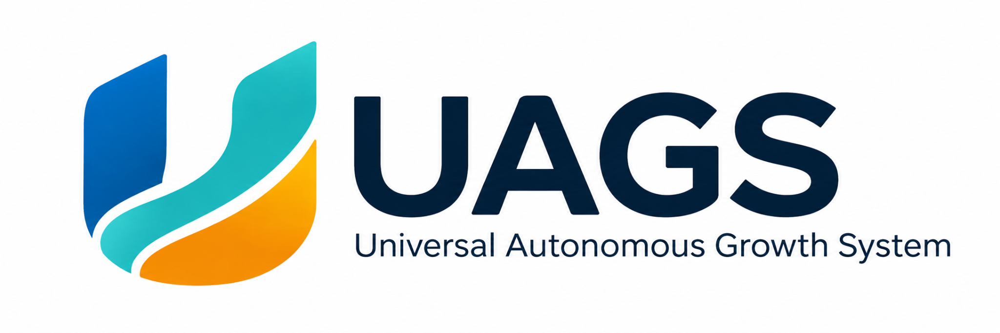

Рынок и ваш сайт
Актуальные публичные примеры, структура страниц и исходный код помогают найти возможный пробел. Любой найденный приём остаётся гипотезой.

UAGS · Universal Autonomous Growth System
Единая платформа для исследования сайта и рынка, поиска точек роста и подготовки полезных изменений.
От первого наблюдения — к понятному решению. С основаниями, вашим контролем и проверкой результата.
Первый шаг: вопросы для исследования вашего сайта. Закрытые данные здесь не собираются.
Наблюдения, решения и следующий шаг.
Иллюстрация интерфейса · данные условные
Как работает UAGS
Наблюдение → гипотеза → правка → измерение. Один понятный процесс вместо несвязанных отчётов.
Публичный сайт, задача и особенности бизнеса. Аналитика и другие подключения добавляются по необходимости.
Исследует страницы и рыночные примеры, проверяет путь клиента и отделяет факты от предположений.
Предлагает полезную правку, способ проверки и откат. Публикация проходит отдельное решение и проверки.
Помогает оценить изменение по доступным данным. Недостаток данных остаётся неизвестным, а не успехом.
Возможности
UAGS помогает исследовать рынок и собственный сайт, готовить полезные правки и проверять их результат. Каждый шаг — с понятным основанием и возможностью отката.
Актуальные публичные примеры, структура страниц и исходный код помогают найти возможный пробел. Любой найденный приём остаётся гипотезой.
Предложение связывает наблюдение, конкретный текст или элемент сайта, ожидаемый результат и способ проверки.
Публикация проходит отдельное решение и проверки. Изменение можно вернуть, а эффект оценивается только по доступным достоверным данным.
Один сайт — свой контекст. Одна правка — своё обоснование. Один результат — честная оценка.
Решения для разных бизнесов
Система не привязана к одной отрасли. Она начинает с вопроса конкретного бизнеса и проверяет, существует ли проблема на его сайте.
Каталог, карточки товаров и путь до покупки.
Услуги, запрос расчёта и доверие заказчика.
Понятное предложение, доказательность и ограничения.
Ассортимент, коммерческий запрос и следующий шаг.
Запись, заявка, портфолио и качество обращения.
Не только SEO
Решение опирается на факты, а не на обещание роста.
Доступность страниц, понятная структура и содержание, техническое SEO и фактические ответы поисковых и ИИ-сервисов. Готовность к обходу не равна индексации или рекомендации.
Что человек понимает на странице, насколько ясен следующий шаг, где возникает неопределённость и какие приёмы других сайтов применимы к вашему бизнесу.
С подключёнными метриками можно смотреть доступные действия и изменения. Заявка не становится продажей автоматически, а временное совпадение — доказательством эффекта.
Автономность — направление системы: от сбора наблюдений к подготовке действий. Доступы, публикации и коммерческие действия требуют применимых разрешений.
Понятный первый шаг
0 ₽
Публичный адрес сайта и один вопрос бизнеса. Полезное ограниченное наблюдение со ссылкой на источник, в пределах текущих лимитов.
990 ₽
Разбор сайта, рынка, пути клиента, видимости и приоритетных рекомендаций с основаниями и планом измерения.
Публичная покупка пока не включена. Итоговый объём показывается до оплаты; готовность полного исследования проходит отдельную приёмку.
База знаний
Для публичного исследования достаточно адреса сайта. Исходный код, аналитика и CRM расширяют доступные доказательства, но не являются обязательным первым шагом. Без исходников нельзя обещать безопасную автоматическую публикацию изменений.
Связывает вопрос бизнеса, наблюдение на сайте, подходящие рыночные примеры и конкретную рекомендацию. Так проще выбрать, что проверять первым и каким показателем оценивать результат.
Публичное исследование не даёт права на изменения. Подготовка, проверка и выпуск правки — отдельные этапы с доступом к нужному ресурсу, разрешением и возможностью отката.
Нет. Индексация, цитирование и коммерческий результат зависят от многих факторов. Мы показываем доступные факты, ограничения и способ проверки гипотез, не выдумывая эффект.
Бесплатная выжимка намеренно ограничена. Полное исследование — отдельный продукт с заранее показанным объёмом. Сейчас его публичная продажа ещё не включена.
Кабинет UAGS размещается отдельно от публичного сайта. Вход включается после настройки доставки одноразовых кодов. Клиентские и административные права разделены.
03 / Первый шаг
Укажите адрес и задачу. План появится здесь сразу.
Если вы уже сохраняли профиль в этом браузере, он появится справа. Можно также открыть ранее сохранённую копию.
Добавьте сайт слева — здесь появится план первых вопросов.
План сохранится в браузере, а публичная заявка поступит UAGS. Получение заявки не означает начало исследования. Для доступа к аналитике и изменений сайта понадобится отдельное подключение.